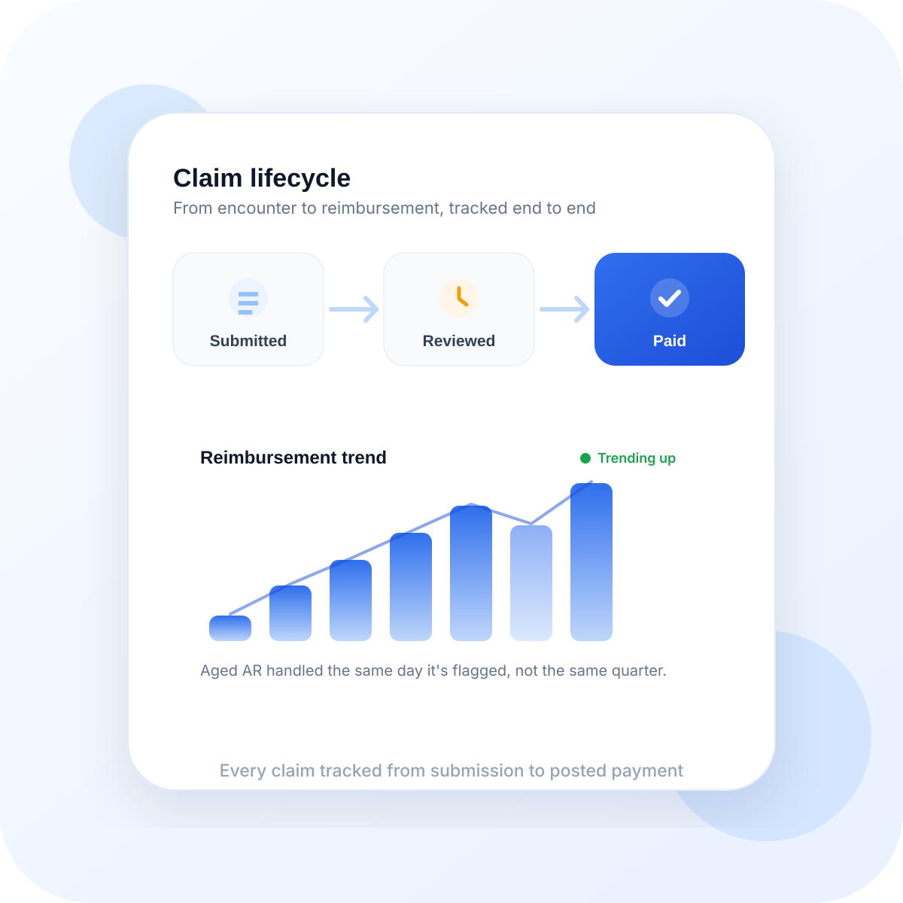
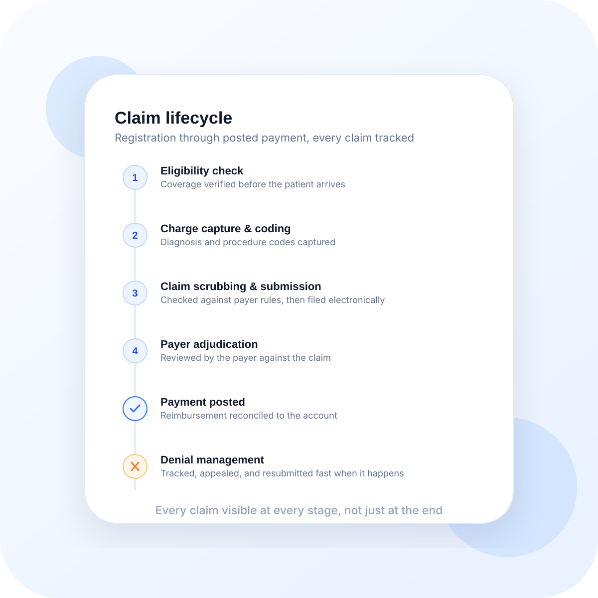

Cleaner pre-submission review
Claims should reach the payer with fewer missing details, fewer rule misses, and less preventable rework for the billing team.
Anot Health puts experienced revenue cycle specialists in charge of your billing operations, using advanced AI to speed up preparation while expert review helps keep claims clean and payer-aware.

Stop guessing why claims are denied. Our AI identifies issues before they reach the payer.
Every claim is audited against current payer rules, NCCI edits, and specialty-specific requirements before submission.
AI-driven denial patterns are identified instantly. Our team appeals denials with the fastest turnaround time.
Live dashboards showing your AR days, collection rates, and payer performance across all locations.
Our billing specialists handle the heavy lifting for complex cases and appeals, using advanced AI to reduce repetitive work and keep expert attention where it matters most.
Instant verification before the patient even arrives.
Learns from every denial to prevent the next one.

Better billing operations do not come from speed alone. They come from fewer preventable touches before and after submission.
Claims should reach the payer with fewer missing details, fewer rule misses, and less preventable rework for the billing team.
When documentation, coding, and billing logic are better aligned up front, time-to-paid becomes easier to control.
Billing staff can spend more time on exceptions that truly need expertise instead of chasing avoidable issues at scale.
Cleaner claims and clearer escalation for the ones that need deeper attention.
Better visibility into where revenue is slowing down and what is driving it.
More confidence that operational improvement is tied to actual reimbursement outcomes.
Billing pressure rarely shows up in one place. It usually appears as slower submission rhythm, harder-to-explain denials, and too many touches before cash is posted.
Front-end cleanup, documentation support, and coding alignment help the billing team avoid avoidable holds.
The goal is not only fewer denials, but fewer staff hours burned on the same categories of rework.
Managers and owners get a clearer story around where claims are slowing down and what to improve next.
These are common decision questions for groups trying to improve claim quality without making the billing workflow heavier.
No. The point is to reduce preventable cleanup before and after submission so the billing team spends more time on real exceptions and less time on repeatable misses.
Yes. Revenue improvement often starts upstream. We focus on whether the note, coding logic, and claim prep support the billing outcome cleanly.
Yes. Groups with more payer variation, provider variation, or specialty complexity tend to benefit the most from a more structured billing support layer.
The first improvements are usually cleaner submission rhythm, fewer preventable rework loops, and better visibility into where cash flow is getting stuck.
Most practices leave meaningful revenue on the table. We help you recover more of what your team has already earned.
Start Your RCM Audit